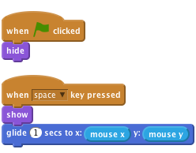
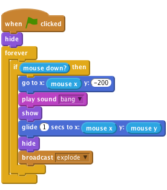
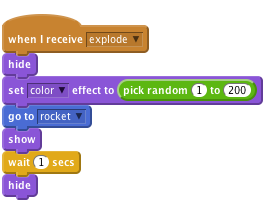
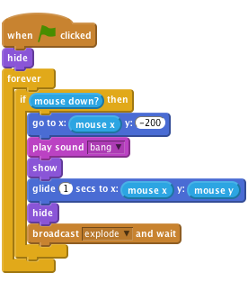

Fireworks
Level 1
In this project, we’ll create a fireworks display over a city.

Let’s import the different pictures for the game
Upload sprite from file button to add a Rocket spriteNow we want to make the rocket move towards the mouse when the mouse is clicked.
Add a when space key pressed control block, and under this make the rocket appear and glide towards the mouse

Click the green flag, place your mouse over the stage and press the space bar.
Does the rocket appear and move to the mouse?
What happens if you move the mouse and press space again?
Fireworks don’t tend to fly from side to side, so lets make sure it always glides towards the mouse from the bottom of the screen. Before we show the rocket, use the go to block tell it to move to below the bottom of the screen, but stay in the same place horizontally.
![when FLAG clicked
hide
when [space v] key pressed
go to x: (mouse x) y: (-200)
show
glide (1) secs to x: (mouse x) y: (mouse y)](0318d3e2174997510451326135c054e625d4df25.png)
Click the green flag, place your mouse over the stage and press the space bar.
Does the rocket fly towards the mouse from the bottom of the screen? What happens if you move the mouse and press space again?
Finally, lets make this work by using the mouse button instead of the space bar. To do this, we can wrap our script in a forever if mouse down.
Then swap the when space key pressed control block for when flag clicked and last but not least make sure the rocket is hidden when everything starts up.

Click the green flag, and then press the mouse button over the stage. Click again at another point.
The first step to make the rocket explode is to make it play a bang sound Resources/bang.wav before it starts moving, and then hide itself once it reaches the mouse. To import a sound go to the Sounds tab and click the Upload sound from file button.
![when FLAG clicked
hide
forever
if <mouse down?> then
go to x: (mouse x) y: (-200)
play sound [bang v]
show
glide (1) secs to x: (mouse x) y: (mouse y)
hide](637d2c0d51dd48129cba0aea47ba61dc1161217b.png)
Next, make the rocket broadcast a new message when it explodes. We’ll listen for this message later on.

Click the green flag.
Make sure the rocket plays a noise and hides when it reaches the mouse.
When it receives the explode message, it should hide itself and then move to the position of the rocket using the go to block, show itself, and then vanish again a second later.
![when I receive [explode v]
hide
go to [rocket v]
show
wait (1) secs
hide](5f83ee23117e99a4e44070d2d92d2a98995836e1.png)
Send another rocket flying.
Does it get replaced with the explosion graphic when it explodes?
What happens if you hold the mouse button down whilst moving the mouse? (Don’t worry, we’ll fix this later on).
Now we can make each explosion even more unique by using the set color effect block, and have it pick a random colour between 1 and 200 before showing it.

Click the green flag.
Does each explosion have a different colour?
Click the green flag.
Does each rocket have a different explosion graphic?
Finally, Let's make the explosion get bigger after the rocket explodes! Instead of waiting a second, set the size of the sprite to 5% before we show it, and then once it’s shown, increase the size by 2 fifty times, using a repeat block.
![when I receive [explode v]
hide
set [color v] effect to (pick random (1) to (200))
go to [rocket v]
show
set size to (5) %
repeat (50)
change size by (2)
end
hide](a337a769de83e0f979865e14bc83ce942012a712.png)
Click the green flag.
Does the explosion graphic spread out from the centre of the rocket and slowly grow?
Remember earlier we had a bug involving holding down the mouse button?
This occurs because when the rocket broadcasts its explosion, it will immediately repeat the if loop and move the rocket back to the bottom of the stage. This happens before the explosion has moved to the position of the rocket.
To fix this, we can replace the broadcast block with a broadcast and wait block. This way, the loop will not repeat until the explosion finishes exploding.

Click the green flag, hold down the mouse button and move the mouse around the stage.
Does the explosion graphic appear in the right place and at the right time?
Well done you’ve finished, now you can enjoy the game!
Don’t forget you can share your game with all your friends and family by clicking on Share on the menu bar!